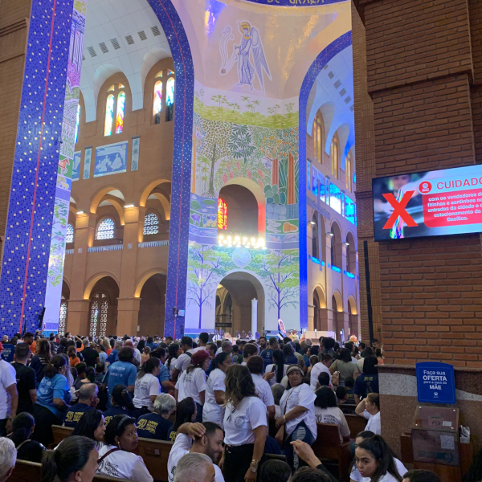

basilica/50 anos do caminho neocateccumenal
vou mostrar algumas coisas que aconteceram na basilica de aparecida
aqui é uma imgem da minha visão

aqui tem o audio de um dos canticos que eu gravei
mudando de assunto
algumas coisas de mine